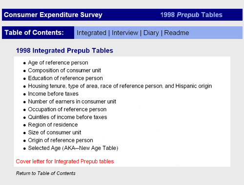

|  |
What I did...
In 1999 I designed, and programmed this simple HTML Intranet to lessen the burden of finding data tables at the Bureau of Labor Statistics-Consumer Expenditure Surveys. |
©Graphic design and programming by Walter VanderHeide®,
see resume for contact details.
Last modified: April 4, 2000